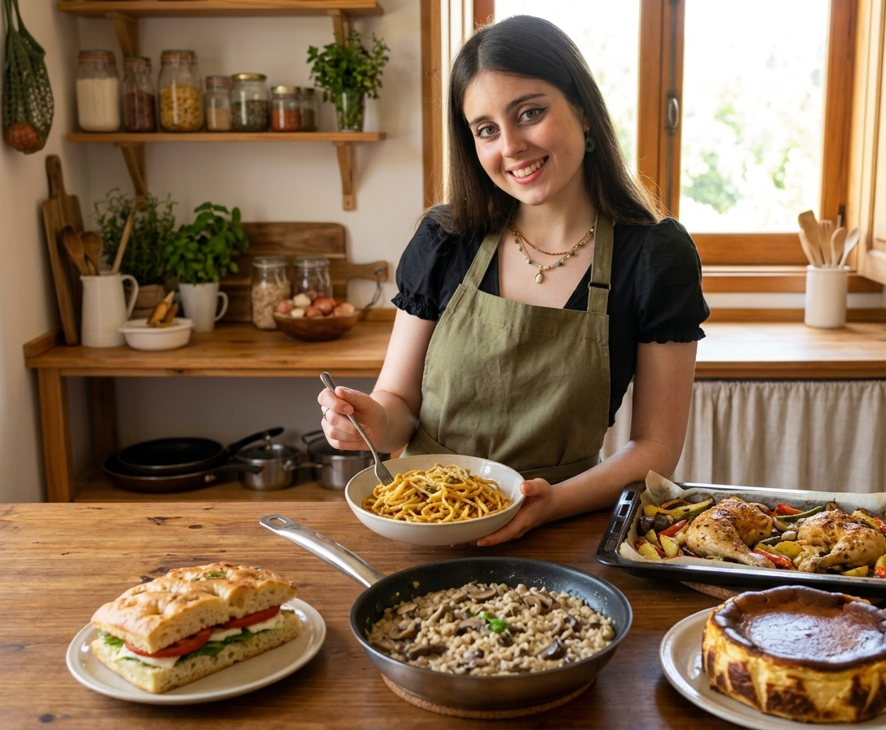
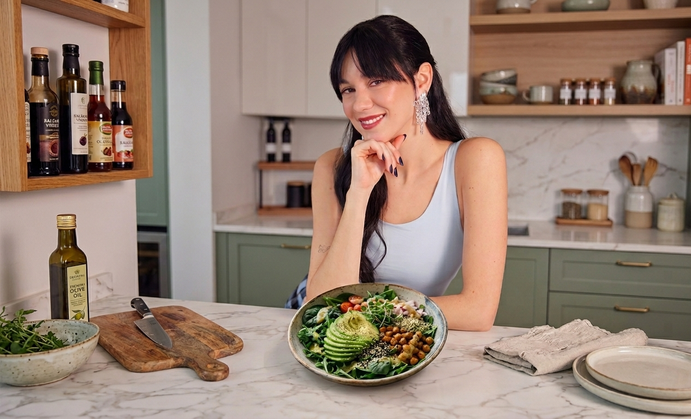

Entra en la cocina de tus influencers favoritos
RoRo y Boukie nos abren la puerta de su casa. Es la solución perfecta para comer bien sin complicaciones.

Hemos seleccionado las 5 recetas favoritas de RoRo para que no tengas que pensar el menú
Sabemos que lo más difícil de la cocina no es encender el fogón, sino decidir qué vas a poner en el plato. Por eso, hemos colaborado con Roro para seleccionar estas 5 recetas que te salvarán.

La cena rápida de Boukie para días cansados
Todos tenemos esos días donde no estamos cansados. Descubre ese plato infalible que salva las noches de Boukie.
“Esta receta es especial para mí porque en menos de 10 minutos tengo la cena lista”.